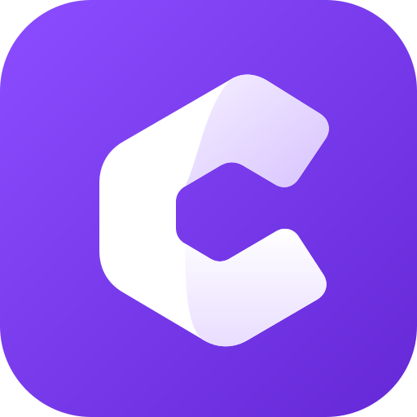
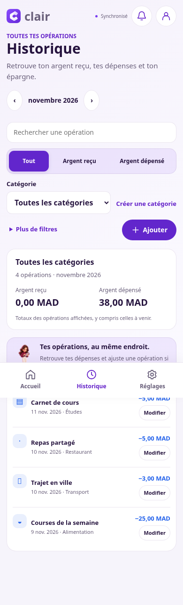
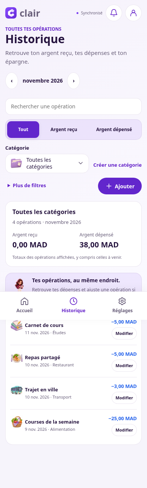
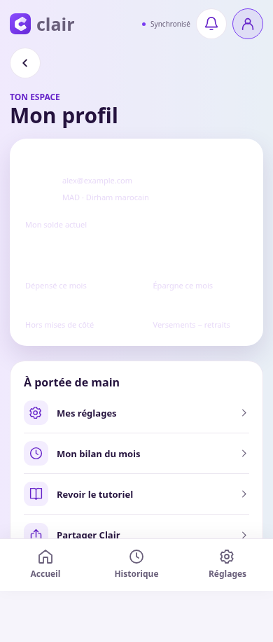
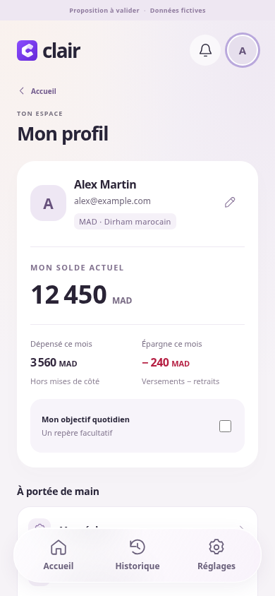

A
↗Verre doux
Proche de ta référenceUn verre dépoli, une sélection en douceur.
La capsule se fait légère.

clairdesign labUn budget plus clair.Une capsule flottante, des gestes plus doux et un profil lisible.
Explore les écrans et choisis la direction qui te ressemble.
De vraies maquettes
à toucher, à parcourir.
Un verre dépoli, une sélection en douceur.
La capsule se fait légère.
L’ajout rapide trouve sa place au centre.
Un petit geste qui donne envie.
Une capsule prune, des repères affirmés.
Le calme avec un peu de caractère.
Prends les commandes. Passe par l’avatar pour ouvrir le profil, touche les boutons, puis ajoute une dépense fictive pour ressentir le geste.
Essais sans enregistrementDes illustrations douces, faciles à reconnaître,
pour garder les bons repères.
Les intitulés, les montants et l’historique sont conservés. La navigation de l’application reste inchangée en attendant ton choix.


Le défaut actuel est reproduit avec un fond et des données fictifs. La proposition A rétablit le contraste et garde la devise lisible.

